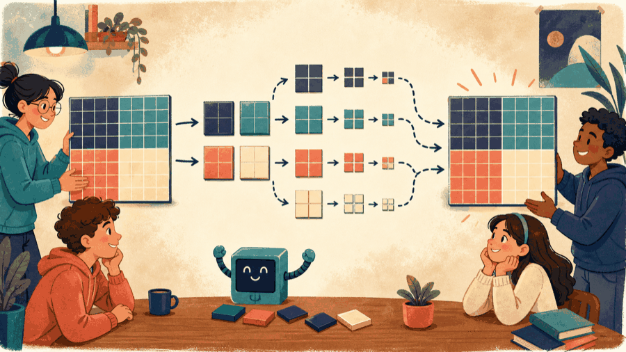
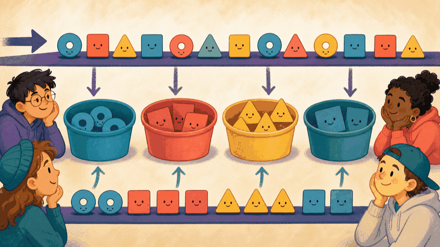

# Lecture 23: Integrate structures, algorithms, and evidence ## Select structures and algorithms for integrated problems **Instructor:** [Dr. Debasish Pattanayak](https://drdebmath.github.io)
## The key representation determines the buckets. · Sort fixed-width institute IDs by digits Radix sort exploits the digit structure of integer keys; the stable bucket pass is the algorithmic application. ~~~cpp #include <array> #include <vector> void digitPass(std::vector<int>& values, int place) { std::array<std::vector<int>, 10> buckets; for (int value : values) buckets[(value / place) % 10].push_back(value); std::size_t out = 0; for (const auto& bucket : buckets) for (int value : bucket) values[out++] = value; } ~~~ **Takeaways** - The key representation determines the buckets. - Stable passes preserve earlier digit order. - The array of vectors is the structure that makes the algorithm direct.
## The general form of a stable counting pass and a recursive decomposition ~~~cpp int <count>[<radix>] = {}; // one bucket per key value for (int <i> = 0; <i> < <n>; ++<i>) ++<count>[<key>(<a>[<i>])]; for (int <d> = 1; <d> < <radix>; ++<d>) // prefix sums give each <count>[<d>] += <count>[<d> - 1]; // bucket its end offset for (int <i> = <n> - 1; <i> >= 0; --<i>) // right to left keeps it stable <out>[--<count>[<key>(<a>[<i>])]] = <a>[<i>]; <result> <solve>(<region>) { if (<region is small enough>) return <direct answer>; return <combine>(<solve>(<sub-region>), ..., <solve>(<sub-region>)); } ~~~ | Part | Meaning | | --- | --- | | `<key>(<x>)` | Extracts the one digit or field this pass sorts on. The key choice is what decides the bucket count. | | `<radix>` | The number of distinct key values. Cost is one pass over the data plus one over the buckets. | | stability | Equal keys keep their earlier relative order. Radix sort is only correct because each pass is stable. | | right-to-left fill | Walking the input backwards while decrementing the offset is what makes the pass stable. | | `<region is small enough>` | The base case. Sub-regions must be compatible with `<combine>`, or the recursion cannot reassemble the answer. | Pick the structure from the operation the program actually needs, then let the invariant that structure maintains carry the correctness argument.
## The required operation determines the candidate structures | Application | Structure | Algorithmic idea | |---|---|---| | process decimal digits stably | buckets | radix passes | | transform every tree node | binary tree | recursive traversal | | multiply matrix blocks | matrices | recursive decomposition | | vary legal behavior by piece | hierarchy | dynamic dispatch |
## Block recursion reduces matrix multiplication to smaller compatible products Split each matrix into four blocks, recursively multiply compatible block pairs, and add partial results. The base case multiplies a sufficiently small block directly. A practical implementation must also handle dimensions that are not powers of two.
## The data structure asks what the program needs to do <figure class="course-meme-figure"> <figcaption> <p class="course-meme-setup"><strong>Setup</strong> The data structure asks what the program needs to do.</p> <p class="course-meme-punchline"><strong>Punchline</strong> Choose the tool from the operation, not from its popularity.</p> </figcaption> </figure>
## Stable buckets let radix sort process one digit at a time For non-negative decimal integers: 1. distribute by the current digit; 2. collect buckets without changing equal-digit order; 3. move to the next digit. The queue-like bucket structure supplies stable collection order.
## Tree inversion swaps each node’s children recursively ~~~cpp Node* invert(Node* root) { if (root == nullptr) return nullptr; Node* left = invert(root->left); Node* right = invert(root->right); root->left = right; root->right = left; return root; } ~~~
## The matrix is too large for one bite <figure class="course-meme-figure"> <p></p> <figcaption> <p class="course-meme-setup"><strong>Setup</strong> The matrix is too large for one bite.</p> <p class="course-meme-punchline"><strong>Punchline</strong> Cut it into compatible blocks, solve the small ones, recombine.</p> </figcaption> </figure>
## A shared Piece interface lets each chess type choose its move A base <code>Piece</code> promises legal-move generation. <code>Rook</code>, <code>Bishop</code>, and <code>Knight</code> implement different movement rules. The board owns pieces; the caller asks through the common interface.
## A capstone needs state, invariants, ownership, stopping rules, and adversarial tests Before implementation, identify: - state and invariant; - ownership and lifetime; - required operations; - base case or stopping condition; - normal, boundary, and invalid tests; - expected time and space growth.
## Equal items still remember who arrived first <figure class="course-meme-figure"> <p></p> <figcaption> <p class="course-meme-setup"><strong>Setup</strong> The current digit decides the bucket for each item.</p> <p class="course-meme-punchline"><strong>Punchline</strong> Sort by one position without shuffling the ties out of order.</p> </figcaption> </figure>
## Game evolution: One verified capstone connects every layer | Final build | Exact parts now connected | Concept provenance | |---|---|---| | linked Snake | command → candidate head → collision check → body/food update → ASCII frame | state and loops L02–L06; functions/tests L07–L12; records and links L13–L14; search L17; game object L18 | | grid Cleaner | 2D world → nearest dirt → parent path → legal move → clean and redraw | arrays/strings L09–L11; queue L15; search comparison L16–L17; class invariant L18 | | multi-agent graph Cleaner | actors → graph links → distinct reservations → synchronous movement → cleaning | inheritance/polymorphism L19–L21; predicates, ranking, routing, and policy L22 | | capstone decision | required operation → representation → algorithm → invariant → adversarial test | L23 integration checklist | **One-turn correctness gate:** every Snake segment is distinct and in bounds; every Cleaner step follows a real grid or graph edge; reserved targets are distinct; dirt never increases and decreases exactly when a target is cleaned. **Adversarial tests:** tail-cell movement, unreachable dirt, equal-distance targets, one actor, and an already-clean world. **Run/play:** <code>codes/lecture-23-snake-linked-game.cpp</code>, <code>codes/lecture-23-grid-cleaning-robot.cpp</code>, and <code>codes/lecture-23-multi-agent-graph-cleaning.cpp</code>. **Final extension:** replay the same verified state trace in terminal, ASCII animation, or HTML/SVG without changing the game rules.
## A capstone is justified by its representation, algorithm, invariant, and evidence - Represent state with a structure whose operations match the problem. - Apply algorithms through those operations. - Preserve bounds, invariants, ownership, and progress. - Use the dependency graph to revisit the earliest uncertain prerequisite.
## Verify Sort fixed-width institute IDs by digits with a claim, trace, boundary, and improvement Use the practical example as a small experiment. Before you leave, make the reasoning visible: - **Claim:** The key representation determines the buckets. - **Trace:** name the state that changes and the observation that would confirm it. - **Boundary:** choose one smallest, largest, empty, or invalid input that could expose a defect. - **Improvement:** explain one change that would make the solution clearer or safer. ### Exit ticket Choose one problem to solve now and two to attempt in the lab: - Complete LSD radix sort for non-negative integers. - Extend radix sort to handle negative integers. - Implement block-recursive multiplication for square matrices.
## Explain Sort fixed-width institute IDs by digits without opening the code Explain today’s idea to a partner without opening the code: 1. State the input, output, and one rule the solution must preserve. 2. Point to the operation that makes progress or changes the state. 3. Name the first test you would run after changing the implementation. If the explanation needs “and then another unrelated thing,” split the design before you code.
## Solve five problems to transfer Sort fixed-width institute IDs by digits **IC151 lab practice · 5 problems** 1. Complete LSD radix sort for non-negative integers. 1. Extend radix sort to handle negative integers. 1. Implement block-recursive multiplication for square matrices. 1. Invert a binary tree recursively and iteratively. 1. Design a ChessPiece hierarchy and generate legal moves polymorphically. Reaching this set marks the lecture as studied in this browser. [Open the IC151 lab setup and batch schedule](ic151.html).
## Integrate a game, cleaner, visualization, music generator, or circuit optimizer. **Studio thread:** Open capstone and Hall of Fame candidate | Ask | Today’s answer | |---|---| | **Problem** | Integrate a game, cleaner, visualization, music generator, or circuit optimizer. | | **Model** | Define state, legal operations, objective, constraints, and audience before coding. | | **Represent** | Choose structures from required operations, ownership, and visualization needs. | | **Solve** | Combine only justified paradigms: recursion, DP, search, greedy, or polymorphism. | | **Verify** | Give a correctness argument, adversarial tests, and a reproducible demonstration. | | **Improve** | Profile, simplify, document trade-offs, and add one meaningful extension. | **Technique lens:** algorithm selection and integration **Compare:** the first correct baseline versus the final evidence-backed design